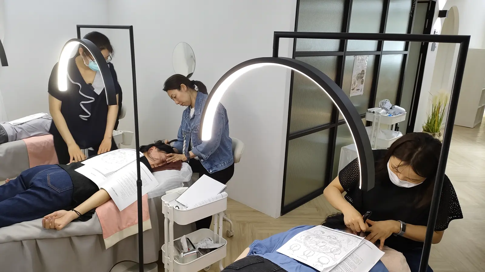

The Bojin Journal · The method
The Point Behind Your Ear: Why Almost Every Routine Ends There

Read enough of my routines and you'll notice something repeat: almost every single one, whatever the area, ends up sweeping behind the ear before heading down the neck. I've written it so many times I stopped explaining why, which was a mistake, because it isn't a throwaway instruction. It's one of the most important points on the whole face, and it earns that importance by being a checkpoint everything else has to pass through.
So here's the idea before the detail: this spot isn't special because of anything mystical happening inside it. It's special because of where it sits. The routes from your cheek, your jaw, and your temple all funnel past this one point on their way down your neck. Keep that checkpoint clear and comfortable, and everything upstream has somewhere to go. Rush past it, and you've done good work that has nowhere to drain.
A checkpoint, not a separate power
It helps to think of your face's various areas as roads that all merge onto one street before leaving town. The cheek has its own path, the jaw has its own, the temple has its own, and they all pass through roughly the same area, just behind and below the ear, before continuing down the neck together. Working this point well isn't a separate technique with its own mysterious effect. It's simply keeping the one shared road clear, so traffic from everywhere else can move through it.
Why it holds more tension than you'd expect
Because several routes converge here, this small area tends to carry more built-up tension than a similarly sized patch of cheek or forehead would. Many women notice it's one of the more tender spots on their face the first time they pay it real attention, and that tenderness makes sense once you see it as a busy junction rather than a quiet corner. It's doing more work than most single points on your face, all day, every day.
A busy junction needs a lighter touch, not a heavier one. Because tension already gathers here, working it with the same pressure you'd use on a wide, flat plane like your cheek is more than the area calls for. A few short, gentle passes with the broad edge, unhurried, does more for this spot than pressing hard ever will.

What happens when you skip it
This is the part that explains a complaint I hear often: "My session felt great, but by evening my face looked the same as before I started." Nine times out of ten, the routine did real work on the cheek or the jaw and then jumped straight to the shoulders or stopped altogether, skipping the one point everything upstream needed to pass through first. The work doesn't vanish when you skip this step. It just has nowhere new to go, so it settles back roughly where it started. This is the same idea behind finishing every session down the neck, just naming the exact spot most routes pass through on the way there.
Work the checkpoint, then continue down
Use a little oil or your usual moisturizer, and try this as the natural close to whatever area you were just working.

Finish your cheek, jaw, or temple work as usual
Complete whatever area you were working, ending your last pass heading toward the ear.
Pause behind the ear
With the broad edge, make three or four short, gentle passes just behind and below the ear, lighter than the pressure you used on the wider planes of your face.
Continue straight down the neck
Without lifting the tool for long, carry the same motion down the side of the neck, so the checkpoint you just cleared has somewhere to send everything next.
Notice how this three-step close ties any routine together, whatever you worked before it. Cheek, jaw, temple, forehead: they all funnel through the same point on their way out, so the same brief pause here serves all of them.
An honest note
This one point won't do anything on its own that the rest of the method doesn't set up first. Its value is entirely in being the checkpoint that lets everything else hold a little longer. The effect stays gentle and temporary, and it still builds with consistency. What paying attention here adds is one missing link in a chain most people were already building correctly everywhere else.
The next time a routine tells you to sweep behind the ear, you'll know why. It isn't a small aside at the end of the instructions. It's the one point everything else was heading toward the whole time.
Quick answers
Why does almost every bojin routine mention the point behind the ear?
Because it sits where the sweeps from your cheek, jaw, and temple all funnel together on their way down the neck. It's a checkpoint the routes pass through, not a special point with its own separate power. Working it well simply keeps that checkpoint clear for everything upstream.
What happens if I skip it?
The work you did on your cheek, jaw, or temple has to pass through this area on its way down the neck, so skipping it is a common reason a session feels good in the moment but doesn't hold. It's the same idea as the neck finish generally, just naming the exact spot most sessions pass through first.
Why does this spot feel more tender than other areas?
Several routes converge here, so it tends to hold more built-up tension than a single flat plane of skin does. That's exactly why it deserves a light touch rather than a heavier one; it's already doing more work than most spots on your face.
How much pressure should I use right behind the ear?
Lighter than you'd use on the cheek or jaw. This is a sensitive junction, not a wide plane, so a gentle, unhurried touch with the broad edge is enough. If it feels tender, that's normal; if it feels sharp, ease off immediately.
See the checkpoint in a full routine
This point makes the most sense watched in context, right where a cheek or jaw routine hands off to the neck. My free 3-minute video shows exactly where that handoff happens.
Watch the free 3-min videoYu-Ting Lan is a Taiwan-based international bojin instructor and the founder of Héhé Studio. She has taught her bojin method to more than a thousand students, from complete beginners to grandmothers, across Taiwan, Hong Kong, and Malaysia.